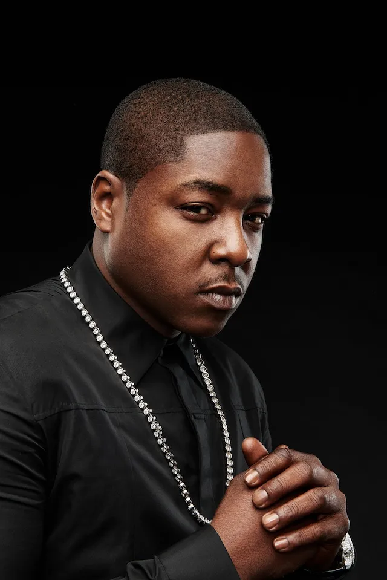

Pusha T
Singles & Remixes
Stream and download CJF1986 remixes for free. Explore the tracks below.
Explore the Collection
Find a remix and listen before you download.
 Big L
Big L
JadakissNas
No tracks match your search.
Stream and download CJF1986 remixes for free. Explore the tracks below.
Find a remix and listen before you download.
Big L
Jadakiss